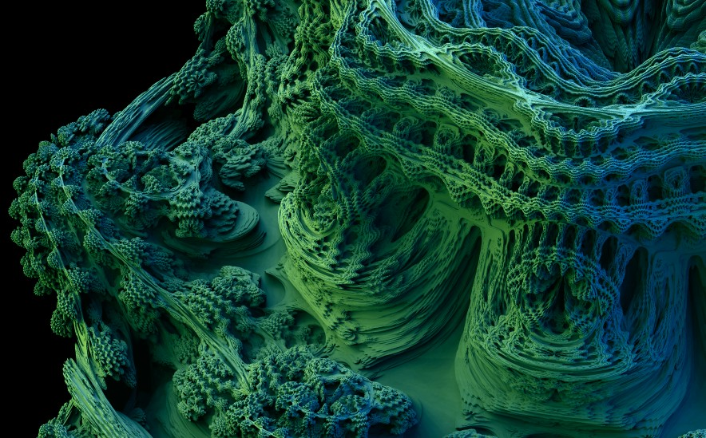
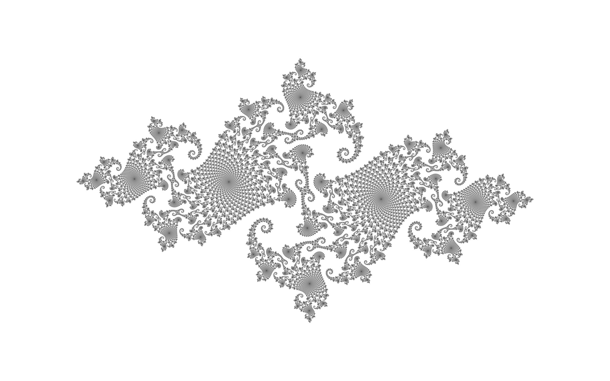
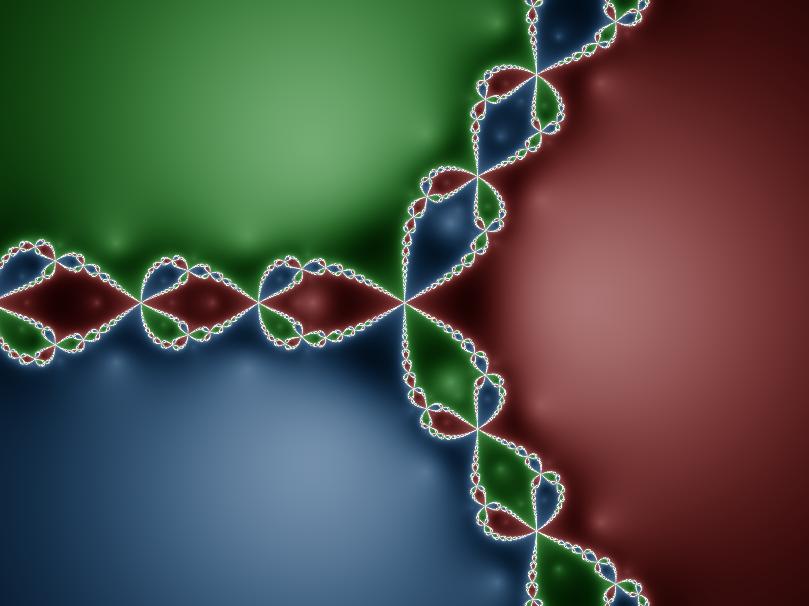

Fraktale
Fraktal ist ein vom Mathematiker Benoît Mandelbrot 1975 geprägter Begriff (lateinisch fractus ‚gebrochen‘,
von
lateinisch "frangere" (in Stücke zer-)brechen), der bestimmte natürliche oder künstliche Gebilde oder
geometrische Muster bezeichnet.
Diese Gebilde oder Muster besitzen im Allgemeinen keine ganzzahlige Hausdorff-Dimension, sondern eine
gebrochene
– daher der Name – und weisen zudem einen hohen Grad von Skaleninvarianz bzw. Selbstähnlichkeit auf. Das ist
beispielsweise der Fall, wenn ein Objekt aus mehreren verkleinerten Kopien seiner selbst besteht.
Geometrische
Objekte dieser Art unterscheiden sich in wesentlichen Aspekten von gewöhnlichen glatten Figuren.
Begriff
Der Begriff Fraktal kann sowohl substantivisch als auch adjektivisch verwendet werden. Das Gebiet der
Mathematik, in dem Fraktale und ihre Gesetzmäßigkeiten untersucht werden, heißt fraktale Geometrie und ragt
in
mehrere andere Bereiche hinein, wie Funktionentheorie, Berechenbarkeitstheorie und dynamische Systeme. Wie
der
Name schon andeutet, wird der klassische Begriff der euklidischen Geometrie erweitert, was sich auch in den
gebrochenen und nicht natürlichen Dimensionen vieler Fraktale widerspiegelt. Neben Mandelbrot gehören Wacław
Sierpiński und Gaston Maurice Julia zu den namensgebenden Mathematikern.
Beispiele
Mandelbulb
Definition
Das Mandelbulb-Fraktal ist ein dreidimensionales Fraktal. Es wurde 2009 von Daniel White und Paul Nylander
konstruiert. Dazu wurde ein herkömmliches Mandelbrot einer sphärischen Koordinatentransformation unterzogen.
Aber, was ist die Formel für dieses Ding?
Es gibt ein paar subtile Variationen, die aber meist auf die gleiche Art von unglaublichen Details
hinauslaufen.
Im Folgenden ist eine Version aufgeführt. Ähnlich wie das ursprüngliche 2D-Mandelbrot ist die 3D-Formel
definiert durch:
z = z^n + c,
wobei "z" und "c" hyperkomplexe Zahlen sind, die kartesische x-, y- und z-Koordinaten darstellen.
Potenzierungsterm
Der Potenzierungsterm kann wie folgt definiert werden:
{x,y,z}^n = r^n { sin(theta*n) * cos(phi*n) , sin(theta*n) * sin(phi*n) , cos(theta*n) }
...wobei:
r = sqrt(x^2 + y^2 + z^2)
theta = atan2( sqrt(x^2+y^2), z )
phi = atan2(y,x)
Und der Additionsterm in z -> z^n + c ist ähnlich wie die standardmäßige komplexe Addition und wird einfach
wie folgt definiert
{x,y,z}+{a,b,c} = {x+a, y+b, z+c}

Mandelbrot
Definition
Die Mandelbrot-Menge, benannt nach Benoît Mandelbrot, ist die Menge der komplexen Zahlen c, für
welche die durch die iterative Vorschrift z_n+1 = z_n^2+c mit dem Startwert 0 endlich bleibt, d. h.
beschränkt
ist.
Implementierung
Interpretiert man die Mandelbrot-Menge (eine Teilmenge der Gaußsche Zahlenebenen) als geometrische Figur, so
ergibt sie ein Fraktal, das im allgemeinen Sprachgebrauch oft Apfelmännchen genannt wird. Bilder berechnet
man,
indem man jedem Pixel eines Bildes eine komplexe Zahl zuordnet und beginnend mit
z = 0 untersucht, ob und wann die Iterationen anfangen, zu „explodieren“. Bleiben die
Werte klein, wird das Pixel häufig schwarz gefärbt, kommt es zu einer „Explosion“ der Zahlenwerte, wird die
Anzahl der dafür notwendigen Iterationen als Farbe kodiert.
Geschichte
Die ersten mit einem Computer generierten Darstellungen wurden 1978 von Robert Brooks und Peter Matelski
vorgestellt. 1980 veröffentlichte Benoît Mandelbrot eine Arbeit über das Thema. Später wurde sie von
Adrien Douady und John Hamal Hubbard in einer Reihe grundlegender mathematischer Arbeiten systematisch
untersucht. Die mathematischen Grundlagen dafür wurden bereits 1905 von dem französischen Mathematiker
Pierre
Fatou erarbeitet.
Ergebnis
Die Mandelbrot-Menge (schwarz) in der komplexen Ebene
Definition über Rekursion
Die Mandelbrot-Menge ist die Menge aller komplexen
Zahlen c, für welche die rekursiv definierte Folge komplexer Zahlen mit dem Anfangsglied
und dem Bildungsgesetz
beschränkt bleibt. Das heißt, eine komplexe Zahl c ist Element der Mandelbrotmenge, wenn die Beträge der mit
diesem c
berechneten nicht über jede Grenze wachsen, unabhängig davon, wie groß
wird.
Deshalb erhält man bei der Visualisierung folgendes Resultat:

Juliamenge
Geschichte
Gaston Julia untersuchte rationale Polynomausdrücke verschiedenen Grades (z.B. z4 + z3/(z + 1) + z2/(z3 +
4z2 + 5)+c), aber in diesem Vortrag werde ich die Diskussion hauptsächlich auf die Familie der Mengen
beschränken,
die durch die spezielle quadratische Fallform f(z) = z^2 + c erzeugt werden. z stellt hier eine Variable der
Form a+ib (a und b reelle Zahlen) dar, die alle Werte in der komplexen Ebene annehmen kann. Die Größe c ist
ebenfalls als komplexe Zahl definiert, wird aber für jede beliebige Julia-Menge konstant gehalten (daher
wird sie als Parameter bezeichnet).
Erklärung
Mit anderen Worten, es gibt unendlich viele Julia-Mengen, die jeweils
für einen bestimmten Wert von c definiert sind, wobei die Julia-Mengen mit kleineren Werten von c (d. h. |c|
kleriner ~ 2) grafisch besonders interessant sind. Der einfache Ausdruck f(z)=z2 + c hat bei einmaliger Verwendung
wenig Potenzial, etwas Interessantes zu erzeugen - nur durch wiederholte Iteration kann die Julia-Menge
definiert werden. Wenn die Ausgabe des Ausdrucks f(z) als neuer Wert von z in den Ausdruck zurückgeführt
wird, nennt man dies Iteration, eine Art Rückkopplungsprozess.
Somit gilt für jedes n: zn+1=f(z)=zn2 + c
und jeder neu berechnete Wert von f(z) wird über die Rückkopplungsschleife zum nachfolgenden Eingabewert
von z. Beachten Sie, dass Autoren rein reale Werte von c wie -1+0i in der Regel als "-1" ausdrücken, was
Laien verwirren kann, die nicht wissen, dass c immer noch in der komplexen Ebene definiert ist. Für den
speziellen Fall, dass c=0+0i ist, ist die Julia-Menge einfach ein (nicht fraktaler) Kreis mit Radius 1.
Eine schöne geometrische Erklärung des Ergebnisses der Quadrierung einer komplexen Zahl und der Addition
einer komplexen Konstante findet sich auf der Website Chaos Hypertextbook (Elert 22.shtml). Für jedes z
besteht diese Transformation aus einer Kontraktion (für |z|<1) oder Dilatation (für |z|>1), die sich aus
der Multiplikation mit |z| ergibt, sowie aus einer Verdoppelung des Polarwinkels (d.h. des Arguments)
von z und einer anschließenden Translation mit c.
Iterationen
Für jeden gegebenen Anfangswert von z, z0, gibt es zwei Möglichkeiten, was mit den iterierten Werten von
f(z) passiert, wenn n gegen unendlich wächst: Entweder kann f(z) unbegrenzt weiter wachsen oder es
bleibt begrenzt. Punkte z0 in der komplexen Ebene, die bei aufeinanderfolgenden Iterationen von f(z)
nicht begrenzt bleiben, werden als Punkte in der Fluchtmenge Ec bezeichnet. Alle anderen Punkte in der
komplexen Ebene bleiben begrenzt, wenn n gegen unendlich geht - sie werden als Gefangene bezeichnet und
befinden sich in der für ein gegebenes c definierten Gefangenenmenge Pc. Alle Punkte müssen entweder in
der einen oder in der anderen Menge liegen. Die gemeinsame Grenze zwischen der Fluchtmenge und der
Gefangenenmenge wird als Julia-Menge Jc bezeichnet, die für einen bestimmten Wert von c definiert ist.
Der Schwellenradius r(c) = max(|c|, 2) ist ein nützliches Testkriterium für die Computerimplementierung.
Wenn ein Orbit zk jemals den Schwellenradius r(c) überschreitet, ist es sicher, dass der Orbit ins
Unendliche entweicht, und daher liegt der Startpunkt in der Fluchtmenge (Peitgen et al. 1992 S. 794).
Literatur
In der Literatur scheint es eine kleine definitorische Verwirrung darüber zu geben, ob die Randpunkte
(d. h. die Julia-Menge) selbst Teil der Gefangenenmenge sind, aber das muss der Fall sein. Die komplexe
Ebene ist nur in gefangene und entweichende Punkte unterteilt, so dass die Randpunkte zu Pc gehören
müssen, da sie nicht zu Ec gehören können (sonst würden sie bei wiederholten Iterationen entweichen, was
nicht der Fall ist). Es gibt Julia-Mengen (d. h. von Randpunkten), die keine inneren Gefangenenpunkte
einschließen. Da Pc per Definition das ist, was von der komplexen Ebene übrig bleibt, nachdem Ec
entfernt wurde, müssen die Rand- und die Gefangenenpunkte übereinstimmen. Ein Beispiel für eine solche
Menge ist Jc für c=0+i (Peitgen et al. 1992 S. 798).
Ich habe dies nicht explizit gesehen, vermute aber, dass es keine Julia-Mengen gibt, die keine
Fluchtpunkte haben, die vollständig von Gefangenenpunkten umgeben sind.
Wie bereits erwähnt, können Julia-Mengen auch aus höhergradigen und komplexeren Ausdrücken gebildet
werden. Im Folgenden sind Julia-Mengen für die iterierten Funktionen f(z) = z4 + c und f(z) = z5 + c
aufgeführt werden.
Ergebnis
Deshalb erhält man bei der Visualisierung des Julia-Fraktals durch oben aufgeführte mathematische Funktionen folgendes Resultat:

Newtonfraktal
Einführung
Diese Seite beschreibt eine Art von Fraktal, das von der Newton-Raphson-Methode abgeleitet ist, die
normalerweise als
eine Näherungsmethode zur Lösung von Gleichungen.
Diese Idee ist nicht neu für mich. Ich stelle eine weitere Seite ein, weil sie einige Ergänzungen zu
diesem
Konzept enthält, die ich
die ich nirgendwo anders gesehen habe.
Berechnung
Die Newton-Raphson-Iteration sollte jedem bekannt sein, der sich mit der Infinitesimalrechnung
beschäftigt
hat; es handelt sich um eine Methode zum Finden von
Wurzeln einer Funktion, indem man die Ableitung der Funktion verwendet, um eine Annäherung an die Wurzel
zu
verbessern.
Um eine Newton-Raphson-Approximation durchzuführen, nehmen wir an, Sie haben eine Funktion f(x) mit der
Ableitung f′(x) und Sie
haben eine Annäherung a an eine Wurzel der Funktion. Das Newton-Raphson-Verfahren besteht darin,
Folgendes
zu berechnen
a′=a-f(a)/f′(a), was eine nähere Annäherung an die Wurzel darstellt. Normalerweise würde man dies dann
wiederholen,
bis die aufeinanderfolgenden Werte extrem nahe beieinander liegen, woraus man schließen würde, dass
man eine sehr gute Annäherung an den tatsächlichen Wert r hat, für den f(r)=0 ist.
Die Newton-Raphson-Methode ist in der Praxis nützlich, weil sie extrem schnell konvergiert. Der Abstand
von
der Wurzel zu jeder Annäherung wird bei jeder Iteration grob quadriert; wenn also der Abstand bereits so
klein ist
Wenn der Abstand bereits so klein ist, dass er dadurch eher kleiner als größer wird, kann man davon
ausgehen, dass sich die Anzahl der richtigen
Dezimalstellen in jeder Näherung zu verdoppeln. Wenn Sie also zu Beginn eine einigermaßen gute
Annäherung
finden können,
kann man mit Newton-Raphson sehr schnell eine ausgezeichnete Näherung erhalten.
Herleitung
Die Newton-Raphson-Formel besteht im Wesentlichen darin, eine Tangente an die Kurve im Punkt der
der ursprünglichen Annäherung, und dann folgt man dieser Tangente bis zu dem Punkt, an dem sie die
x-Achse
schneidet. Da jede differenzierbare
Funktion bei ausreichender Vergrößerung fast wie eine Gerade aussieht, erklärt dies, warum es so gut
funktioniert
so gut funktioniert: Die Kurve selbst weicht nicht sehr stark von der Tangente ab, und die Punkte, an
denen
sie die x-Achse
die x-Achse kreuzen, liegen sehr nahe beieinander. Diese Technik verbessert also eine bereits gute
Annäherung massiv
Annäherung.
Wenn man jedoch von einer wirklich schlechten Näherung ausgeht, passieren noch viel interessantere
Dinge.
Angenommen, die
Funktion krümmt sich von einem Schnittpunkt mit der x-Achse nach oben und wieder nach unten, wie eine
Parabel; und
Nehmen wir an, Ihre anfängliche Näherung liegt irgendwo in der Nähe des oberen Endes dieses Bogens.
Zeichnen
Sie nun eine Tangente an die Kurve
und folgen Sie ihr zur x-Achse, so sind Sie weit von den Wurzeln der Funktion entfernt - und da
Ihre erste Approximation a den Maximalpunkt der Kurve schneidet, wird die zweite
Newton-Raphson-Approximation
a′ von einer Seite der Wurzeln auf die andere wechseln. Wenn a die relativ kurze Strecke
über das Maximum der Kurve bewegt, wird a′ den größten Teil der realen Linie abdecken.
Verhalten
Diese Art von Verhalten, die Ausdehnung eines kleinen Bereichs in einen großen, ist genau die Art von
Verhalten, die wir erwarten
die zu selbstähnlichen Fraktalen führen. Wenn wir also an jedem Punkt der realen Linie eine
Newton-Raphson-Iteration starten würden
der reellen Linie starten, jede Iteration so lange laufen lassen, bis sie innerhalb eines bestimmten
Toleranzbereichs zu einer Wurzel konvergiert, und dann
den Startpunkt einfärben, je nachdem, bei welcher Wurzel sie gelandet ist, könnten wir fraktale
Formen.
Fraktale auf einer Linie sind jedoch nicht sehr interessant; arbeiten wir also in der komplexen Ebene.
Die
Newton-Raphson-Iteration funktioniert dort immer noch sehr gut, also werde ich dort meine Fraktale
erzeugen.

Bilderklärung
In diesem Bild sehen wir einen großen langweiligen Bereich, der jede Wurzel der Funktion umgibt - wie zu
erwarten war, da
jeder Punkt in der Nähe einer Wurzel schnell zu dieser Wurzel konvergiert und nichts Interessantes tut.
Aber
zwischen den Bereichen
der langweiligen, gutmütigen Konvergenz sehen wir einige schöne fraktale Formen. Zoomen wir auf einen
dieser
Grenzbereiche:
Wie wir vorausgesagt haben, besteht jeder der herzförmigen Kleckse, aus denen die Grenzlinie besteht,
selbst
aus
Grenzlinien, die aus weiteren herzförmigen Klecksen bestehen. Dieses Muster ist ein echtes Fraktal.
Hier ist ein etwas anderes Beispiel. Diesmal ist die verwendete Funktion
(z-3)(z-2)(z-1)z(z+1)(z+2)(z+3),
also
hat sie sieben Wurzeln, die in einer langen Linie aufgereiht sind:
In diesem Fall sind die fraktalen Formen im Vergleich zur Gesamtstruktur des Bildes viel kleiner. Aber
sie sind nicht völlig abwesend. Wenn wir ein paar der kleinen Kleckse an den Grenzlinien heranzoomen,
sehen
wir
dies:
Dekoration
Diese Bilder sind recht hübsch, aber sie sind etwas zu grell, um sie in ihrer jetzigen Form als
Desktop-Hintergrund zu verwenden.
Form zu machen. Können wir etwas tun, um sie weniger grell zu machen?
Iterationen
Ja, das gibt es. Eine offensichtliche Sache, die wir tun können, ist neben der Feststellung, bei welcher
Wurzel der Funktion die Iteration
bei welcher Wurzel der Funktion gelandet ist, kann man auch zählen, wie viele Iterationen nötig waren,
um
dorthin zu gelangen. Dann können wir jedem Pixel eine andere Farbe
Schattierung der Farbe einfärben, die dieser Wurzel zugewiesen ist, je nach Anzahl der Iterationen. Wenn
man
also den offensichtlichen
Ansatz, den Pixelton auf die Anzahl der Iterationen modulo der Anzahl der verfügbaren Farbtöne zu setzen
(so
dass
so dass jede Farbe diese Schattierungen durchläuft), ergibt sich etwa folgendes Bild:
Das ist nicht nur hübscher, sondern es zeigt uns auch genau, wo jede Wurzel der Funktion liegt - anstatt
nur
zu wissen, dass die Wurzeln irgendwo in den großen farbigen Bereichen liegen, können wir nun jede Wurzel
eindeutig als den
Zentrum des hellen Flecks in jedem Bereich identifizieren.
Das zyklische Verhalten ist allerdings nicht ganz optimal; es funktioniert gut genug, wenn die Anzahl
der
verfügbaren Farben
begrenzt ist, aber es bedeutet, dass es plötzliche Kanten gibt (wie die in der Mitte jeder Region), an
denen
eine
dunkle Farbe plötzlich wieder zu einer hellen Farbe wird. Wenn wir echte Farben zur Verfügung haben,
wäre es
vielleicht besser
besser, wenn die Pixelschattierung monoton wäre - immer dunkler, je mehr Iterationen erforderlich sind,
aber
immer dunkler werden, je mehr Iterationen erforderlich sind, aber immer weniger ausblenden und nie
wirklich
schwarz werden.
Vorschlag
Das sieht schon viel besser aus, finde ich. Aber es wäre noch besser, wenn die sichtbaren Grenzen
zwischen verschiedenen Schattierungen der gleichen Farbe entfernt werden könnten. Ich habe den Verdacht,
dass eine strenge Umsetzung dieses Vorhabens
wirklich schreckliche Mathematik und eine Menge Sonderfälle erfordert, aber ich habe herausgefunden,
dass
man eine gute Ad-hoc-Näherung erhält
eine gute Ad-hoc-Annäherung erhält, indem man einfach die letzte Iteration betrachtet, bei der der Punkt
zum
ersten Mal in den angegebenen
Abstand zu einer Wurzel kommt. Wir betrachten den Abstand D0 zwischen dem vorherigen Punkt und der
Wurzel
und den Abstand D1 zwischen
dem neuen Punkt zur Wurzel, und wir wissen, dass der Schwellenwertabstand T irgendwo zwischen den beiden
liegt.
Ich habe herausgefunden, dass ein einfacher Blick auf
oder, mit anderen Worten, ob der logarithmische Wert des Schwellenradius in der Nähe des Beginns oder
des
Endes der vom Punkt zurückgelegten inneren
der vom Punkt zurückgelegten Strecke (auf einer logarithmischen Skala) liegt, ein durchaus akzeptables
Ergebnis liefert, das
zur Glättung dieser Grenzen verwenden können:
Es stellt sich heraus, dass dies möglich ist. Beachten Sie, dass eine Funktion, die aus dem Produkt
vieler
kleinerer Faktoren besteht
Faktoren
f=abcd, dann ergibt die Produktregel ihre Ableitung als Summe einer Liste von Termen
f′=a′bcd+ab′cd+abc′d+abcd′
wobei jeder Term f selbst sehr ähnlich sieht. In der Tat können wir beide Seiten durch f dividieren und
erhalten
f′f=a′a+b′b+c′c+d′d
was genau das ist, dessen Kehrwert wir in der N-R-Formel von z subtrahieren. Wenn nun jeder
Faktor a
von der Form (z-k) ist, dann sieht der resultierende Term a′/a wie 1/(z-k) aus; und wie wir in der
vorherigen
Wenn der Faktor auf eine Potenz erhöht wird, so dass er die Form (z-k)e hat, dann ist der resultierende
Term
a′/a
ist
nur um eine Konstante verändert, so dass er zu e/(z-k) wird.
Wenn wir also eine Funktion haben, die das Produkt einer Reihe von Termen der Form (z-a1)b1 ist, dann
können
wir
die Newton-Raphson-Iteration effizient durchführen, ohne die gesamte Funktion selbst zu berechnen. Wir
berechnen einfach b1/(z-a1) für jeden Term, summieren sie, bilden den Kehrwert und subtrahieren diesen
von
z.
Das Nützliche an diesem Verfahren ist, dass wir so jeden Faktor unseres "Polynoms" (das die Funktion
selbst
darstellt) bequem erhöhen können.
"Polynoms" (das eigentlich gar kein Polynom mehr ist) nicht nur auf eine beliebige reelle Potenz,
sondern
auch auf
a
komplexe Potenz erhöhen, wenn wir das wollen. Und es stellt sich heraus, dass wir das auch wollen, denn
einige sehr beeindruckende Fraktale
werden
auftauchen, wenn wir das tun. Hier ist eine Karte mit 121 kleinen fraktalen Bildern, die alle aus
Funktionen
mit denselben drei Wurzeln, nämlich den komplexen Wurzeln von 1, erzeugt wurden.
Aber die rote Wurzel (1 selbst) wurde auf eine andere Potenz angehoben
in
in jedem Bild auf eine andere Potenz angehoben: quer durch die Karte verläuft der Realteil der Potenz
von 0
bis 1, und nach unten hin der Imaginärteil
Teil
von 0 bis 1.